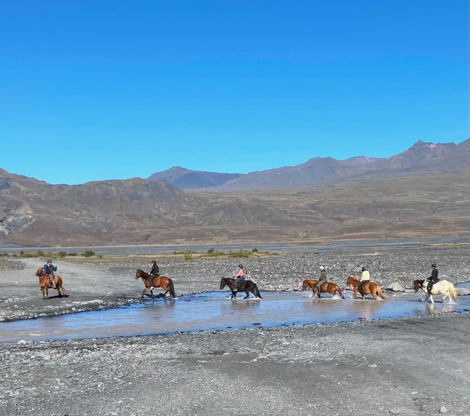

The Short Version
Every hospital hierarchy exists for a reason, but our team should feel rank only when the patient needs it. In Iceland, accomplished riders fixed my loose girth and offered tips with zero condescension. Whether expertise turns into status is decided by the people with the most skill, and I have let it slide in my own hospitals.
If you have spent any time around competitive riding, you know its reputation. It draws people who are very good, and who know it. So when I signed up for a four-day riding trip in Iceland with thirteen strangers, part of me braced for it. There were competitive show jumpers in the group, and endurance riders who had been at this seriously for decades. And then there was me, somewhere in the middle, someone who used to ride regularly, stopped for years, and was climbing back on with older achy joints and rusty hands.
A Group That Refused to Show Their Resume
There were probably greener riders than me in the group, though I doubt anyone would have volunteered that out loud. In riding circles, admitting you are the least experienced person present is its own small act of courage, and it usually goes unspoken. I kept waiting for someone to pull rank, to drop their riding credentials as a claim to superiority. But it never came.
We started working from the moment we arrived, tacking up horses, leading them, and sorting out riding assignments and logistics. Nobody was given time to feel incompetent or intimidated. The work itself demanded that you show up, and our guide was there to help you get it right. I wrote about her leadership in a separate piece, The Saddle, Not the Rider. This one is about the rest of us, the riders, and what we did with the environment she created.
On the first day, our guide explained the system, and from then on it was ours to run. We groomed each other’s horses, helped each other saddle up and grab equipment, and took turns holding several horses at once so someone could walk free to the corral or gather the herd at the end of the day. There was always someone willing to help another rider get up into the saddle. It sounds minor, but it set the tone for everything that followed.
The moment that stuck was on the last morning. Four days of riding when you are not a regular rider takes a toll, and my shoulder was reminding me of its age and of the thirty-plus years it had rested from these movements. I squealed, out loud, hauling myself up into the saddle. One of the show jumpers saw it, and instead of the look I was braced for, she offered a tip on positioning my hands differently. She was right, it helped, and she said it the way you tell someone the time, matter of fact and not the least bit condescending, just genuinely useful. Earlier in the trip, another rider had noticed my girth working loose and offered to fix it before I had to ask. The skill in that group was obvious, and it never once got converted into rank.
What stays with me is that these were people who had earned the right to look down, by any conventional scoring, and they chose not to. It was a choice, made over and over in small moments across four days. Nobody made their resume the point. Nobody treated helping a rusty rider as beneath them.

Everyone crossing the same river, each at their own pace.
The Same Hierarchy Can Show Up in Our Hospitals
Then I came home to veterinary medicine. We have the exact same spread. Surgeons and new graduates, techs with twenty years of experience and techs in their first month, kennel staff and front desk staff carrying real weight in patient care. We share the same patients and the same stakes. And I have watched the hierarchy show up anyway, in hospital after hospital, including ones I ran.
I have seen it in the surgeon whose time gets treated as scarcer and therefore more important, in the seasoned tech who sighs at the new person until she stops asking questions and starts guessing, which is exactly how mistakes happen, in the front desk staff treated as though they are not doing real veterinary medicine, and in the kennel staff talked about as helpers rather than teammates. We convert competence into status the way those riders refused to. I want to be honest that I have done it myself, and that I have let it happen on my watch when I was tired and it was easier to let rank sort the room than to lead.
We tell ourselves the hierarchy is inevitable. The stakes are high, the skill gap is real, and someone has to be in charge. All of that is true, and none of it requires the sighing, or the ranking, or the message that some roles are real medicine and the rest are just support. A group of strangers on borrowed horses showed me that skill and humility are not a trade-off. You can be the best in the room and still fix a stranger’s girth, and in my experience the best in the room usually do.
Hierarchy Is a Choice, Not a Given
Your hospital has a hierarchy, and it always will. The question is not whether rank exists. It is whether your team feels it every time they walk in, or only when it actually matters for the patient. That gap is not set by your org chart. It is set by the people with the most skill, and by what they choose to do with it, hour after hour.
A companion to The Saddle, Not the Rider, which is about the guide. This one is about the riders.
— Dr. V
The Gray Oak Journal
Keep reading


Dr. V is a veterinarian with over twenty years of clinical and operational leadership experience. She has owned and operated several veterinary hospitals, weathered many shifts in the industry, and served on advisory councils. She writes The Gray Oak Journal at grayoakjournal.com.